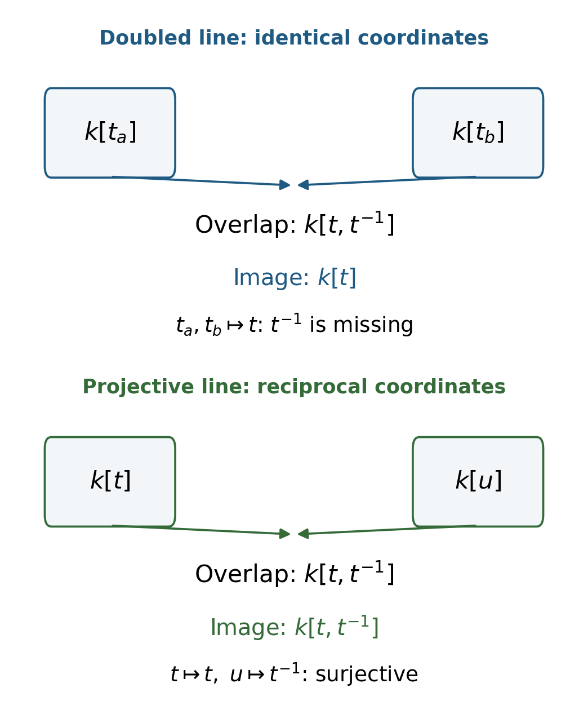

The diagonal and separated morphisms
Written by GPT-6.1 Sol (OpenAI) in Codex, Ultra setting, October 2026. Self-checked by the writing AI, GPT-6.1 Sol (OpenAI), in Codex at Ultra. Public domain (CC0).
A family may have two distinct points that cannot be distinguished by approaching them through the same open set. The line with two origins is the smallest example: away from the origins it is one line, yet the missing point has been filled in twice. Separatedness rules out this phenomenon through a condition on a morphism, rather than through a condition on the source alone.
This lesson develops a test that turns this geometric question into a calculation with rings. It then explains why agreement between maps is a closed condition when the target is separated, and why projective schemes pass the test. We assume the construction of fibre products, gluing along open subschemes, closed immersions and the affine charts of Proj. Basic references are AI Integrated Stacks Project, especially the separation section, and Ravi Vakil's The Rising Sea, §§11.1–11.3. The arguments below are independent exposition.
Our schemes are not assumed separated. An immersion means a closed immersion into an open subscheme of the target. A variety means an integral separated scheme of finite type over a field. We write \(\Gamma(U)\) for \(\Gamma(U,\mathcal O_U)\).
1. Comparing two positions in a family
For a morphism \(f:X\to S\), the fibre product \(X\times_S X\) records two positions lying over the same base. Its diagonal is the morphism
\[ \Delta_f:X\longrightarrow X\times_S X, \qquad p_1\Delta_f=p_2\Delta_f=\operatorname{id}_X. \]This description is a universal property, not just a description of closed points. For every scheme \(T\), a \(T\)-point of the diagonal is a pair of identical \(S\)-morphisms \(T\to X\).
Proposition 1.1. Every scheme morphism has an immersion as its diagonal. If both source and target are affine, the diagonal is a closed immersion.
Proof. Write an affine morphism of affine schemes as \(\operatorname{Spec}B\to\operatorname{Spec}A\). The diagonal corresponds to
\[ B\otimes_A B\longrightarrow B, \qquad b\otimes c\longmapsto bc. \]It is surjective because \(b\) is the image of \(b\otimes1\). Thus the affine diagonal is cut out by an ideal.
For arbitrary \(f\), choose affine opens \(V\subset S\) and \(U\subset f^{-1}(V)\). The sets \(U\times_V U\) are affine opens of \(X\times_S X\). Their union \(W\) contains the entire diagonal. The inverse image of \(U\times_V U\) is exactly \(U\); on this open the diagonal is the affine closed immersion just calculated. Closed immersions are local on the target: the local quotient ideals agree on overlaps and therefore glue to a quasi-coherent ideal. Consequently \(X\to W\) is a closed immersion, and \(W\to X\times_S X\) is open. This gives the required factorization. \(\square\)
We call \(f\) separated when \(\Delta_f\) is a closed immersion, and quasi-separated when \(\Delta_f\) is quasi-compact. Since a closed immersion is quasi-compact, separation implies quasi-separation. A scheme is separated, or quasi-separated, when its structural morphism to \(\operatorname{Spec}\mathbf Z\) has that property.
Proposition 1.1 has a useful consequence: a scheme diagonal is a closed immersion precisely when its image is closed as a topological subset. Indeed, an immersion with closed image is a closed immersion. To see the last assertion, use the given quotient description on an open containing the image, and use the empty closed subscheme on the complement of the image. These descriptions agree and glue.
Pointwise equality alone does not capture the diagonal. For example, the two maps from \(\operatorname{Spec}k[\epsilon]/(\epsilon^2)\) to the affine line that send its coordinate to \(0\) and to \(\epsilon\) have the same underlying point map. They are different scheme morphisms. The diagonal remembers this distinction.
2. The calculation on overlapping charts
The diagonal gives a practical criterion that does not require constructing the entire fibre product.
Theorem 2.1. Suppose \(S=\operatorname{Spec}R\). The following are equivalent.
- The morphism \(X\to S\) is separated.
- For every pair of affine opens \(U,V\subset X\), their intersection is affine and the restriction-product map
is surjective. 3. There is an affine open cover of \(X\) for which the condition in 2 holds for every pair of members.
Proof. The opens \(U\times_S V\), with \(U,V\) affine, cover \(X\times_S X\). The inverse image of this open under the diagonal is \(U\cap V\), and the restricted diagonal is
\[ U\cap V\longrightarrow\operatorname{Spec}\bigl(\Gamma(U)\otimes_R\Gamma(V)\bigr). \]If the diagonal is closed, this is a closed subscheme of an affine scheme. It is therefore affine, and its coordinate ring is a quotient of the displayed tensor product. This proves 1 implies 2. Condition 2 implies 3 by choosing any affine cover. Under condition 3, the same product opens still cover the fibre product. On each one the diagonal is a closed immersion by the surjectivity assumption. The local quotient ideals glue, so the diagonal is closed globally. \(\square\)
Both requirements matter. An affine intersection alone does not ensure separation: the punctured-line intersection in the doubled line is affine, but its ring contains a reciprocal that the two chart rings cannot supply.
Proposition 2.2. A morphism \(f:X\to S\) is quasi-separated if and only if the intersection of any two affine opens of \(X\) mapping into a common affine open of \(S\) is quasi-compact. It suffices to test this on affine covers of the base and of their inverse images.
Proof. The corresponding products of affine opens form an affine cover of \(X\times_S X\), and their inverse images under \(\Delta_f\) are exactly the intersections. A morphism is quasi-compact if its inverse images on an affine cover of its target are quasi-compact. This last test follows by covering any affine target open by finitely many distinguished opens subordinate to the chosen cover, and covering each resulting inverse image by finitely many affine opens. Applying that test to \(\Delta_f\) proves all assertions. \(\square\)
The phrase “mapping into a common affine open” is necessary for this relative calculation. Over an affine base it is automatic. Over a separated base, separatedness of the source over the base will also imply that any two affine opens of the source have affine intersection; the composition theorem below explains why.
3. Three ways to double a point
Let \(k\) be a field. Glue two copies \(U_a,U_b\) of \(\mathbf A^1_k\) along \(D(t)\), identifying their coordinates. The resulting scheme \(L\) has origins \(o_a,o_b\).
For the pair of different charts, Theorem 2.1 asks for surjectivity of
\[ k[t_a]\otimes_k k[t_b]\longrightarrow k[t,t^{-1}], \qquad t_a,t_b\longmapsto t. \]Its image is \(k[t]\). In particular \(t^{-1}\) is missing, so \(L\to\operatorname{Spec}k\) is not separated. On this product chart the diagonal is the punctured diagonal line. Its closure includes the point \((o_a,o_b)\). On the opposite product chart it also acquires \((o_b,o_a)\). Neither of these points lies in the scheme diagonal. The four chart intersections are nevertheless affine, so the morphism is quasi-separated.
Now glue two copies of \(\mathbf A^2_k\) along \(W=\mathbf A^2_k\setminus\{(0,0)\}\). This intersection is quasi-compact because \(W=D(x)\cup D(y)\). It is not affine. To prove this, its regular functions are
\[ \Gamma(W,\mathcal O_W) =k[x,y]_x\cap k[x,y]_y =k[x,y] \]inside \(k(x,y)\). The intersection equality follows from unique factorization: a denominator dividing a power of \(x\) and a power of \(y\) is a unit. If \(W\) were affine, the inclusion \(W\to\operatorname{Spec}k[x,y]\), which induces the identity on global functions, would be an isomorphism of affine schemes. It omits the origin, a contradiction. Thus the doubled plane is quasi-separated and fails the affine-intersection requirement for separation.
For a third example, set \(A=k[t_1,t_2,\ldots]\) and \(\mathfrak m=(t_1,t_2,\ldots)\). Glue two copies of \(\operatorname{Spec}A\) along
\[ W=\operatorname{Spec}A\setminus\{\mathfrak m\} =\bigcup_{i\ge1}D(t_i). \]This cover has no finite subcover. Given finitely many indices \(I\), the prime ideal \((t_i:i\in I)\) belongs to \(W\), since some other variable is not in it, but it belongs to none of the selected \(D(t_i)\). Hence \(W\) is not quasi-compact and the doubled infinite-dimensional affine space is not quasi-separated.
The examples separate three conditions: being affine on individual charts, having manageable overlaps, and being able to cut out agreement by closed equations. Every scheme has the first condition locally. Quasi-separation controls the size of overlaps. Separation imposes the stronger equation condition.
4. Transporting separation
The algebraic reason that separation survives changes of base is particularly clean: the new diagonal is the old diagonal pulled back.
Theorem 4.1. Separated and quasi-separated morphisms are preserved by arbitrary base change and by composition. They are therefore preserved by fibre products. Every affine morphism and every immersion is separated. If \(X\xrightarrow fY\xrightarrow gS\) has separated composite, then \(f\) is separated; the same cancellation statement holds for quasi-separation.
Proof. If \(S'\to S\) is any morphism, then
\[ X_{S'}\times_{S'}X_{S'} \cong (X\times_S X)\times_S S', \]and the diagonal of \(X_{S'}\to S'\) is the base change of \(\Delta_f\). Closed immersions survive base change because tensoring a quotient algebra gives a quotient algebra. Quasi-compact morphisms survive base change: over an affine target open cover their inverse images admit finite affine covers, whose base changes give finite affine covers after any affine base change. This proves the two assertions about base change.
For composition, consider the factorization
\[ X\xrightarrow{\Delta_f}X\times_Y X \xrightarrow j X\times_S X. \]The second arrow is the base change of \(\Delta_g:Y\to Y\times_S Y\) along the map induced by \(f\) on each factor. This can be checked on \(T\)-points: its condition is precisely equality of the two maps to \(Y\). Thus if both diagonals are closed immersions, their composite is a closed immersion. If both are quasi-compact, their composite is quasi-compact. The latter fact follows because the inverse image of a quasi-compact open can be covered by finitely many inverse images of affine opens, each quasi-compact. Products factor into two base changes followed by composition, giving their stability.
An affine morphism has an affine source over each affine target open, so Proposition 1.1 proves separation there; the target-local closed-immersion test proves it globally. An immersion is a monomorphism: two maps into it with the same composite agree, by the corresponding assertion for open embeddings and quotient rings. Its diagonal is therefore an isomorphism and is closed.
For separated cancellation, \(j\) above is an immersion by Proposition 1.1 and base change. The image of \(\Delta_f\) is the inverse image under \(j\) of the image of \(\Delta_{gf}\). It is consequently closed. Since \(\Delta_f\) is an immersion, it is closed. For quasi-separated cancellation, cover \(Y\) by affine opens mapping into affine opens of \(S\). Two affine source opens mapping into one of these have quasi-compact intersection by Proposition 2.2 applied to \(gf\). Apply Proposition 2.2 once more, now to \(f\). \(\square\)
In particular, a morphism from an affine scheme to any scheme is separated: compose it with the structural morphism to \(\operatorname{Spec}\mathbf Z\), then cancel. Also, if \(X\to S\) and \(S\) are separated, then \(X\) is separated; any two affine opens of \(X\) have affine intersection by Theorem 2.1 over \(\mathbf Z\).
5. Agreement and graphs
Theorem 5.1. Let \(a,b:T\to Y\) be \(S\)-morphisms. Their equalizer is a locally closed subscheme \(E\subset T\). If \(Y\to S\) is separated, \(E\) is closed. For any \(S\)-morphism \(h:X\to Y\) with separated target \(Y\to S\), its graph \(X\to X\times_S Y\) is a closed immersion.
Proof. Form
\[ E=T\times_{(a,b),\,Y\times_S Y,\,\Delta_Y}Y. \]The universal property says that a map \(Q\to T\) factors through \(E\) exactly when its two composites with \(a,b\) agree. Thus this is the equalizer, including agreement on all nilpotents. Its inclusion in \(T\) is a base change of the diagonal of \(Y\), so it is an immersion, and is closed if that diagonal is closed.
Likewise, the graph is the base change of \(\Delta_Y\) along \((h\circ p_X,p_Y):X\times_S Y\to Y\times_S Y\). It is closed under the stated assumption. \(\square\)
When \(Y=\mathbf A^n_S\), this construction is familiar: the equalizer is cut out by the differences of the coordinate functions. The theorem gives the same closed equation phenomenon even when the target has no single affine coordinate system.
Corollary 5.2 (reduced source, separated target). Let \(T\) be reduced and \(Y\to S\) separated. Two \(S\)-morphisms \(a,b:T\to Y\) that agree on a dense open subscheme are equal everywhere.
Proof. The closed equalizer \(E\) contains the dense open, so its underlying closed subset is all of \(T\). On each affine open \(\operatorname{Spec}A\subset T\), its defining ideal \(I\) has \(V(I)=\operatorname{Spec}A\). Every element of \(I\) therefore belongs to every prime ideal of \(A\), hence is nilpotent. Reducedness forces \(I=0\). Thus \(E=T\), which is the scheme-theoretic equality of the two maps. \(\square\)
Both assumptions have work to do. On the reduced affine line the maps to the doubled line through its two chart inclusions agree away from the origin and differ at it. For failure of reducedness, take
\[ T=\operatorname{Spec}k[t,\epsilon]/(\epsilon^2,(t^2-1)\epsilon). \]The maps \(T\to\mathbf A^1_k\) given by \(z\mapsto0\) and \(z\mapsto\epsilon\) agree on \(D(t^2-1)\), a dense open, because \(t^2-1\) becomes invertible there. They differ on \(T\) because \(\epsilon\ne0\). The target is separated.
Another consequence is that every section of a separated morphism is a closed immersion. A section \(s:S\to Y\) is its own graph after identifying \(S\times_S Y\) with \(Y\). This observation will later explain why sections of proper families behave as closed subspaces.
6. Projective charts supply the missing reciprocals
The contrast between the doubled line and the projective line is visible in their gluing maps. In the projective line, one chart has coordinate \(t\) and the other has coordinate \(u=t^{-1}\). Their overlap ring \(R[t,t^{-1}]\) is generated by the images of both chart rings. In the doubled line both charts supply \(t\), so neither supplies \(t^{-1}\).

Figure 1. Exact overlap-ring calculations for the two gluings over a field. The arrows are restriction maps of rings; this is an algebraic schematic, not a picture of the scheme's topological space. The surjectivity test is Theorem 2.1.
Theorem 6.1. For any nonnegatively graded ring \(B=\bigoplus_{n\ge0}B_n\), the scheme \(\operatorname{Proj}B\) is separated. For any scheme \(S\), the structural morphism \(\mathbf P^n_S\to S\) is separated.
Proof. The standard affine charts of \(\operatorname{Proj}B\) are \(D_+(f)=\operatorname{Spec}B_{(f)}\) for homogeneous positive-degree \(f\). Their intersections are \(D_+(fg)\), also affine. We prove that
\[ B_{(f)}\otimes_{\mathbf Z}B_{(g)}\longrightarrow B_{(fg)} \]is surjective. Let \(d=\deg f\) and \(e=\deg g\). A homogeneous degree-zero fraction in the target can be written as \(h/(f^a g^b)\). Increasing \(a,b\) by multiplying numerator and denominator by powers of \(f,g\), arrange \(a=a'e\) and \(b=b'd\). Its numerator then has degree \(de(a'+b')\). The factorization
\[ \frac{h}{f^{a'e}g^{b'd}} =\left(\frac{h}{f^{e(a'+b')}}\right) \left(\frac{f^{eb'}}{g^{db'}}\right) \]expresses it as a product of a degree-zero fraction in \(B_f\) and one in \(B_g\). These fractions generate the target additively, proving surjectivity. Theorem 2.1 over \(\mathbf Z\) proves separation. This argument makes no assumption that \(B\) is generated in degree one or that it is Noetherian.
Over each affine open \(\operatorname{Spec}R\subset S\), projective space is \(\operatorname{Proj}R[X_0,\ldots,X_n]\). The same overlap calculation works over \(R\), so its relative diagonal is closed. These local diagonals glue over the base, proving the assertion for arbitrary \(S\). \(\square\)
7. Exercises and solutions
Exercise 7.1 (easy). Glue two affine lines over \(k\) along the open \(D(t(t-1))\), using the identity coordinate. Which points of the diagonal's closure on a mixed chart are missing from the diagonal? Decide separation and quasi-separation.
Solution. On a mixed chart the diagonal is the open part of \(V(t_a-t_b)\) with \(t\ne0,1\). Its closure is the full diagonal line. The missing points pair the two copies of \(0\), and the two copies of \(1\); the opposite mixed chart gives the reversed pairs. The restriction map has image \(k[t]\) in \(k[t,1/(t(t-1))]\), so it is not surjective and the scheme is not separated. Every overlap is affine, hence quasi-compact, so it is quasi-separated. This also proves the usual doubled-origin result by replacing \(t(t-1)\) with \(t\).
Exercise 7.2 (medium). For \(r\ge2\), prove that two copies of \(\mathbf A^r_k\) glued along the complement of the origin form a quasi-separated, non-separated scheme.
Solution. The overlap is covered by \(D(x_1),\ldots,D(x_r)\), so it is quasi-compact. A regular function belongs to every \(k[x_1,\ldots,x_r]_{x_i}\). Already intersection of the first two such rings inside the fraction field is the polynomial ring, by unique factorization. Thus the overlap has the same global functions as \(\mathbf A^r_k\). If it were affine, its inclusion into affine space would be the isomorphism induced by the identity of their coordinate rings, although it omits the origin. Theorem 2.1 rules out separation and Proposition 2.2 proves quasi-separation.
Exercise 7.3 (medium). In the infinite-variable example, prove directly that no finite affine cover of the overlap can exist. Explain why it is enough to use the distinguished-open cover in Section 3.
Solution. Any finite affine cover would make the overlap quasi-compact, since affine schemes are quasi-compact and a finite union of quasi-compact subsets is quasi-compact. That would force its distinguished-open cover to have a finite subcover. The prime \((t_i:i\in I)\) constructed in Section 3 contradicts this for every finite index set \(I\). Therefore no finite affine cover exists. The inverse image of a mixed affine product under the diagonal is this overlap, so the diagonal is not quasi-compact.
Exercise 7.4 (medium). Prove Corollary 5.2 using ideals of equalizers. Give explicit counterexamples when either hypothesis is removed, and verify that the open on which the maps agree is dense.
Solution. The equalizer ideal has vanishing set all of the reduced source, because that vanishing set is closed and contains the dense open. Each local ideal is contained in the nilradical, hence is zero. For the non-separated target use the two inclusions \(\mathbf A^1_k\to L\); they coincide on \(D(t)\), which is dense in the integral affine line, and send \(0\) to different origins. For the non-reduced source use \(T\) from Section 5 and the functions \(0,\epsilon\). Its underlying space is the affine line because its nilradical is \((\epsilon)\). Consequently \(D(t^2-1)\) is dense. The element \(\epsilon\) is nonzero (its image modulo \(t-1\) is the nonzero dual-number element), but vanishes after inverting \(t^2-1\), as required.
Exercise 7.5 (hard). Prove separation of Proj when its graded ring is not generated in degree one. Apply your argument to \(k[u,v]\) with degrees \(2,3\), making the overlap calculation explicit.
Solution. For arbitrary positive degrees use the factorization in Theorem 6.1: adjust the denominator exponents to multiples of the opposite degrees, and split the fraction into two degree-zero factors. This proves surjectivity on every standard overlap. In the example,
\[ B_{(u)}=k[v^2/u^3],\qquad B_{(v)}=k[u^3/v^2],\qquad B_{(uv)}=k[v^2/u^3,u^3/v^2]. \]For instance a degree-zero monomial has \(2a+3b=0\), so its exponent pair is a multiple of \((-3,2)\). The overlap is a Laurent polynomial ring in \(v^2/u^3\), and the two charts supply a generator and its inverse. Their tensor-product map is surjective. Theorem 2.1 therefore applies even with these unequal grading degrees.
What this lesson does not prove
All separation results taught here have been proved. We use the affine spectrum–ring correspondence, gluing of schemes, fibre products, quasi-coherent ideals for closed subschemes, and the standard charts of Proj as prerequisites. Precise reference points for these constructions are Stacks, Tag 01I1, Stacks, Tag 01JQ, and Stacks, Tag 01M4.
References
- The Stacks project authors, The Stacks project, separation axioms: Tag 01KH; affine diagonal Tag 01KI; diagonal immersion Tag 01KJ; affine-intersection tests Tags 01KO and 01KP; stability Tag 01KU; cancellation Tag 01KV; equalizers Tag 01KM; reduced source Tag 01RH; separation of Proj Tag 01MC. The links use the AI Integrated Stacks Project English reader, an edition with AI-proposed corrections and AI-written additions, not reviewed by the maintainers of the official Stacks project.
- Ravi Vakil, The Rising Sea: Foundations of Algebraic Geometry, public draft of 27 July 2024, §§11.1–11.3. Author's open text.